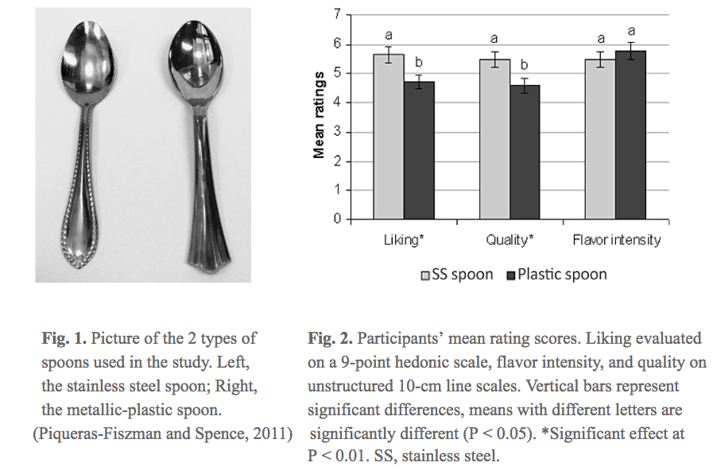
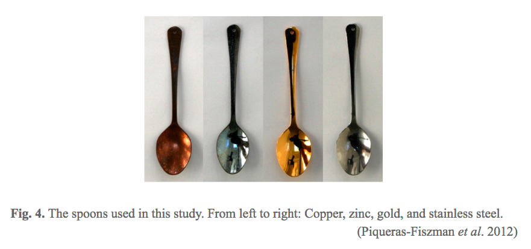

Humans have numerous sensors including sight (vision), hearing (audition), taste (gustation), smell (olfaction) and touch (somatosensation), the five traditionally recognized senses. Generally, human perceived food with the two most commonly used senses – taste and smell. However, there are a lot more stimuli than we can imagine from other factors that can influence the whole perception of food. In this article, we will elaborate some examples about how the accessories such as utensils interact with the signals generated from the sensors we usually used while we are consuming foods or drinks and consequently influence the taste.
Being born with a silver spoon in your mouth has been known to have some advantages. In fact, eating with a silver utensil really can make your foods seem to taste better. Charlie Spence, a professor of experimental psychology at Oxford University, looked at how the cutlery (two teaspoons here in the study, one is plastic spoon with metallic appearance and the other is stainless steel spoon) affected sensory and the perception of yoghurt.
The result revealed that the identical yoghurt samples can be tasted significantly different with a metallic plastic spoon or with a stainless steel spoon, the latter resulting in significantly higher scores. People liked the same yogurt 19.5% more sampled with stainless steel spoon than with the plastic spoon and 19.1% of the participants also considered that the yogurt consumed with stainless steel had higher quality than with plastic spoon. Consumers’ quality and liking judgments can be seen in Fig. 2.
According to Dr. Spence’s guessing, silver utensils are more commonly associated with high-quality food in our prior eating experiences that leads to the result. Besides, the stainless steel spoon has more weight in it which might be able to explain the different perception caused by the 2 different spoons. The same group of authors published another paper in 2013 and observed that significant effects for quality perception and liking were associated between heaviness and quality in yogurt. We will illustrate more details of that research in the next part of the article.

Charlie Spence also investigated how spoons, knives and other utensils we put in our mouths can provide a kind of "mental seasoning" for food. Spence et al. varied the weight, size, color and shape of cutlery respectively and assessed the impact of changing the sensory properties of the cutlery on participants’ ratings of the sweetness, saltiness and expensiveness perceived value, and overall liking of the yogurt tasted from it.
Experiment 1
The results revealed that the fancy spoon was not significantly different from the others spoons for any of the ratings. The differences are more obvious when comparing the spoon size and spoon weight as independent factors. The yogurt was perceived significantly denser, more expensive and more liked but rated less sweet when tasted from a lighter plastic spoon when compared to the artificially weighted spoons. The lighter teaspoon compared to the heavier one and the other 2 tablespoons, impart less sweetness but higher rate of density, expensiveness and liking of the yogurt. The reason why the yogurt tastes sweeter with the smaller size spoon is because that we usually consume sweet food such as desserts or ice cream with it. Therefore, we will have higher expectation that the food would generally taste sweeter with a small spoon than with a large spoon. However, the result is actually opposite from the research done by the same group of researchers who found that yogurt was tasted denser and more expensive when the yogurt was placed in heavier plateware. We cannot just summarize which kind of utensils will result in the best taste of food in a simple way. Our taste actually depends on the past experience we have with food and variation of the kinds of foods.
Experiment 2
The results in experiment 2 demonstrated that the color of either food and utensils affect the taste. Overall, the color contrast of food and utensils will both together impact the taste of food. Less contrast makes things taste sweeter. Thus, white yogurt on a white spoon, for instance, tastes sweeter than pink yogurt on a white spoon. Another interesting discovery is the significantly higher saltiness perception of pink yogurt than white tasted with blue spoon. This can be explained by the previous study by Harrar et al., 2011, demonstrating that a blue bowl also increase the saltiness perception. Indeed, blue packaging is often associated with salty snack products like trail mix. The association-expectation link of people might responsible for the perception of saltiness when tasting from the blue spoon. When consumers see white food on a blue background, they expect saltiness of the taste. However, when the intensity of saltiness does not meet their expectation, there will be a magnification of the dissonance experienced by the participant who might rate the sample less salty than the other samples.
Experiment 3
Finally, the experiment is about the influence of the shape of the cutlery and experience of the testers have with the food. They reported that experience play an important role on the taste of cheese and that the cutlery used also has great impact as well. Those who had heard of the term ‘sharp’ preferred the sharper cheese more than the naive cheese tasters. Moreover, the results showed that the food was rated as the saltiest when sampled from a knife rather than from a spoon, fork, or toothpick. Knives are not usually inserted into one’s mouth but the participants were explicitly instructed to put each of cutlery into their mouths to keep condition consistent in this experiment. Perhaps the unusual behavior might have caused the increase in saltiness perceived. The other possible explanation is that samples are often given directly from the knife in cheese stores. Besides, cheese shop often sell more aged cheeses, which are saltier. Therefore, eating cheese from the knife may have brought out extra perceived saltiness. A conclusion might be made from this study that for those who like salty aged cheeses, they might be more likely to buy a cheese they have just sampled from a knife rather than from a spoon, fork, or toothpick.
This study investigated the effect that the taste of certain metals has on the perception of food. Four same teaspoons were used – three stainless steel spoons electroplated with gold, zinc, or copper to a thickness of 10 microns (0.01 mm) and a fourth spoon that kept as stainless steel one (Fig. 4) – to taste cream samples having different tastes: sweet, sour, bitter, salty, and plain.
This research showed that the spoons coated with different metals really does taste different and they could influence the perception of the taste and pleasantness of food consumed from them. Gold and stainless steel produced the better results compared to the stronger metallic taste of the copper and zinc spoons that enhanced the bitterness perceived in the sweet sample and boosted the bitterness and the saltiness of the salty, bitter and sour creams. Interestingly, copper and zinc coated spoons were also the best to use to enhance the sweetness and inhibit the saltiness. As for the plain cream, these copper and zinc spoons only increase the perceived bitterness of the samples. These results suggest that the zinc and copper spoons, apart from transferring a somewhat metallic and bitter taste, enhance the dominant taste that each cream had.

If we know that a metal is able to make something taste stronger, for example, sweeter, then there’s potential to reduce the sugar content in the food itself. The knowledge of association between the taste increase and the material of the utensils could be applied in the food industry and improve the food-consuming experience. A field that has already put the knowledge into practical application is the usage of the utensils that the tasters for certain kind of food or drink need. The highest quality spoons for the tasters are usually a unique, one-of-a-kind designer gold spoon. The gold spoon enables the tester to sample foods without experiencing any aftertaste from the spoon itself.
Some people believe that the flavor and taste of the food or drink have already been decided when they were made. However, human experiences and how the foods and drinks are presented will change the feeling after the perception. It is much more things to understand through looking at what's happening inside the brain and not just the tongue of the person eating or drinking.
The examples we have all demonstrated that contextual variables would affect a human’s perception of food. These findings open up new research directions emphasizing the potential importance of the properties of cutlery and its influence on consumers’ perception of food. These results are relevant to product development and to caterers and restaurateurs because different flavor of dishes could be matched with different types of cutlery in order to increase convenience and, at the same time potentially enhance the consumers’ eating experience.
In fact, how we experience food is a multi-sensory experience involving taste, feel of the food in our mouths, aroma, and the feasting of our eyes. Even before we put food into our mouths, our brains have made a judgment about it, which affects our overall experience. The experiment discussed in the examples are only testing on how the utensils like spoon, fork or knife influence the basic flavors such as sweet, sour and bitter. It would also be interesting to investigate the taste of more complicated food and the eating experience including the variations of both utensils and flatwares in the future research.
https://www.npr.org/sections/thesalt/2013/06/30/196708393/from-farm-to-fork-to-plate-how-utensils-season-your-meal https://www.frozendessertsupplies.com/p-592-how-should-you-be-eating-your-ice-cream.aspx https://onlinelibrary.wiley.com/doi/epdf/10.1111/j.1745-459X.2011.00351.x https://www.sciencedirect.com/science/article/pii/S0950329311000966 https://flavourjournal.biomedcentral.com/articles/10.1186/2044-7248-2-14
Leave a comment